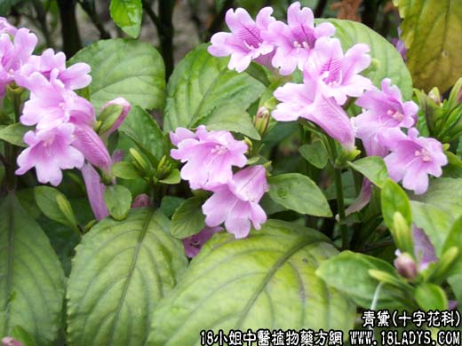

【中药概述】
青黛为十字花科草本植物菘蓝的新鲜叶经加工制得粉末。咸、寒。归肝、肺、胃经。
1．用于温热病或温疫热毒发斑、吐血、咯血等可单用，亦可与蛤粉，蒲黄等同用。
2．用于小儿疳积发热及惊热等，如（青黛丸）。
3．用于肺热咳嗽，气急痰稠之证，如（青黛海石丸）。
4．外涂痄腮肿痛（用鸡蛋清调涂）、口舌溃疡及湿热疮疹多脓汁黄水痛痒等证。
【药效鉴别】
青黛清肝凉血解毒。与白矾二药合用，共奏清肝解毒，消痰瘀退黄疸之功。
【临证应用】
青黛、海石、瓜蒌仁、川贝母各等份，研末炼蜜为丸，每服10g，治肺热咳嗽。
【药理作用】
对炭疽杆菌、志贺氏痢疾杆菌、金黄色球菌有抑制作用。
【化学成分】
含靛蓝5％以上。
【用量用法】
本品9——30g，水煎服，多入剂。